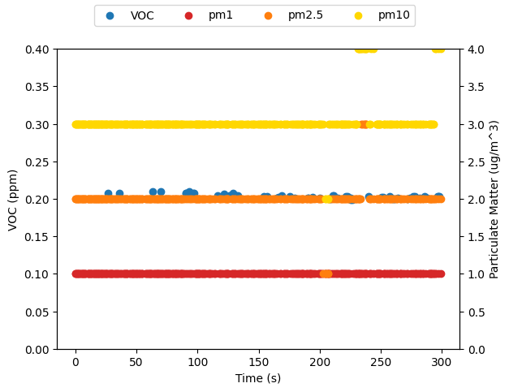

import timeI have had an Atmotube Pro for a few years, mostly using it during the summer to keep an eye on poor air quality during wildfire smoke events. I often export data from it, as a csv, to noodle around, but I haven’t really looked at how to log data directly from it with my laptop. Atmotube provides documentation on the bluetooth API and a guide for how to set up an MQTT router. But I couldn’t really find anything on just logging data from it directly, using python.
Thus my project for the Victoria Day long weekend was to figure out how to collect data from my atmotube using python. This works on my laptop but could, presumably, be ported to something like a raspberry pi easily enough.
Requesting data with GATT
The Atmotube documentation gives two main ways of getting data from the device: using GATT or just passively from the advertising data the Atmotube broadcasts when it isn’t connected to anything (the BLE advertising packet). The most straightforward, to retrieve something specific, is via GATT.
I am going to be using Bleak to scan and connect to BLE devices. To start I need a BleakScanner to scan for devices and, once I have found the one I want, connect to it as a BleakClient. Then, to make the various requests, I need the corresponding UUIDs – these correspond to specific packets of data as described in the docs
from bleak import BleakScanner, BleakClient# some constants
ATMOTUBE = "C2:2B:42:15:30:89" # the mac address of my Atmotube
SGPC3_UUID = "DB450002-8E9A-4818-ADD7-6ED94A328AB4"
BME280_UUID = "DB450003-8E9A-4818-ADD7-6ED94A328AB4"
SPS30_UUID = "DB450005-8E9A-4818-ADD7-6ED94A328AB4"
STATUS_UUID = "DB450004-8E9A-4818-ADD7-6ED94A328AB4"The function scan_and_connect scans for the device which matches the mac address of my Atmotube, then proceeds to request each of the four packets of data. This simply returns a tuple with the data and the timestamp.
async def scan_and_connect(address):
device = await BleakScanner.find_device_by_address(address)
if not device:
print("Device not found")
return None
async with BleakClient(device) as client:
stat = await client.read_gatt_char(STATUS_UUID)
bme = await client.read_gatt_char(BME280_UUID)
sgp = await client.read_gatt_char(SGPC3_UUID)
sps = await client.read_gatt_char(SPS30_UUID)
ts = time.time()
return (ts, stat, bme, sgp, sps)I can connect and get a single data point, but what I have is a timestamp and a collection of bytes. It is not cleaned up and readable in any way.
res = await scan_and_connect(ATMOTUBE)The easiest way to unpack a sequence of bytes is to use the struct standard library. But there are two exceptions:
- The info byte is 8-bits where each bit corresponds to a particular flag. I could pull out each bit one by one using bit-shifting or something, but using a ctype struct lets me map the whole two-byte status characteristic into the various info flags and the battery state in one clean step.
import structfrom ctypes import LittleEndianStructure, c_uint8, c_int8
class InfoBytes(LittleEndianStructure):
_fields_ = [
("pm_sensor", c_uint8, 1),
("error", c_uint8, 1),
("bonding", c_uint8, 1),
("charging", c_uint8, 1),
("charge_timer", c_uint8, 1),
("bit_6", c_uint8, 1),
("pre_heating", c_uint8, 1),
("bit_8", c_uint8, 1),
("batt_level", c_uint8, 8),
]- The PM characteristic is a 12-byte sequence where each set of 3-bytes is a 24-bit integer. This is not an integer type that is natively supported by python. I thought I could do the same thing as the Status characteristic and map it onto a ctype struct, but that didn’t work. As a work-around I collect each 3-byte sequence as arrays and convert each to an int as a two-step process. I could also have used
int.from_bytes()directly, but I think this is a little neater and easier to read.
class PMBytes(LittleEndianStructure):
_fields_ = [
('_pm1', c_int8*3),
('_pm2_5', c_int8*3),
('_pm10', c_int8*3),
('_pm4', c_int8*3),
]
_pack_ = 1
@property
def pm1(self):
return int.from_bytes(self._pm1, 'little', signed=True)
@property
def pm2_5(self):
return int.from_bytes(self._pm2_5, 'little', signed=True)
@property
def pm10(self):
return int.from_bytes(self._pm10, 'little', signed=True)With those two pieces out of the way, I define the actual variables I want – these are the column names I want to have in the final dataframe – and process the bytes. The first step is to use the InfoByte struct I defined above to pull out the flags and battery status, I add this to the results more for my own interest. Then I use struct.unpack() to unpack the integers from each byte-string and store the results.
Finally I use the PMBytes class to process the PM data. If the sensor isn’t on the results are -1 and so I clean those out. The idea is to leave any blank readings as None, since that is easy to filter out with pandas later on.
HEADERS = ["Timestamp", "VOC", "RH", "T", "P", "PM1", "PM2.5", "PM10"]def process_gatt_data(data):
result = dict.fromkeys(HEADERS)
if res is not None:
ts, stat, bme, sgp, sps = data
result["Timestamp"] = ts
# Info and Battery data
inf_bits = InfoBytes.from_buffer_copy(stat)
for (fld, _, _) in inf_bits._fields_:
result[f"INFO.{fld}"] = getattr(inf_bits, fld)
# SGPC3 data format
tvoc, _ = struct.unpack('<hh', sgp)
result["VOC"] = tvoc/1000
# BME280 data format
rh, T, P, T_plus = struct.unpack('<bblh', bme)
result["RH"] = rh
result["T"] = T_plus/100
result["P"] = P/1000
# SPS30 data format
pms = PMBytes.from_buffer_copy(sps)
result["PM1"] = pms.pm1/100 if pms.pm1 > 0 else None
result["PM2.5"] = pms.pm2_5/100 if pms.pm2_5 > 0 else None
result["PM10"] = pms.pm10/100 if pms.pm10 > 0 else None
return resultNow I can process the result I collected earlier.
process_gatt_data(res){'Timestamp': 1747673644.60206,
'VOC': 0.223,
'RH': 32,
'T': 21.3,
'P': 93.37,
'PM1': 1.0,
'PM2.5': 2.18,
'PM10': 3.27,
'INFO.pm_sensor': 1,
'INFO.error': 0,
'INFO.bonding': 0,
'INFO.charging': 0,
'INFO.charge_timer': 1,
'INFO.bit_6': 0,
'INFO.pre_heating': 1,
'INFO.bit_8': 0,
'INFO.batt_level': 63}The results are what I expect for my apartment. In addition to the air quality data, we can see that the PM sensor was on and that the Atmotube had been charging recently.1 The pre-heat flag indicates that the device has completed any pre-heating and is ready. So everything looks good.
1 I unplugged it before charging was done so it wouldn’t interfere with any temperature readings when I tested this code, that’s why the battery was only at 63%
I could, at this point, just start a service or cron job to poll the device every so often and log the results. It will only return PM results when the atmotube is actively sampling, which could present some issues with timing. If the device is set to sample, for example, every 15 minutes and the script doesn’t make a request during that window, it will never return results. For everything that follows I set my atmotube to sample continuously.
Collecting broadcast data
The other way of logging data from the atmotube is to pull it out of the advertising packet the atmotube broadcasts as a bluetooth device. In this case I don’t actually connect to the device, the scanner runs continuously and sends back any advertising data it finds using the adv_cb() callback function. This checks if the data came from my atmotube and, if it did, adds it to the results.
The scanner runs inside an event loop which starts the scanner, waits until the collection_time has elapsed, then shuts down and returns the results.
import asyncioasync def collect_data(device_mac, collection_time=600):
def adv_cb(device, advertising_data):
if device.address == device_mac:
results.append((time.time(), device, advertising_data))
else:
pass
return None
async def receiver(event):
async with BleakScanner(adv_cb, scanning_mode='active') as scanner:
await event.wait()
results = []
loop = asyncio.Event()
task = asyncio.create_task(receiver(loop))
await asyncio.sleep(collection_time)
loop.set()
_ = await asyncio.wait([task])
return resultsRunning this for 10 seconds lets me collect some example data to play with.
broadcasts = await collect_data(ATMOTUBE, 10)Processing the advertising packet is similar to what was done with the GATT data, except that it comes in two flavours: the broadcast packet has the basic temperature, pressure, VOC, device status and the scan response packet contains the PM data and is shorter. Here the PM data is at a lower resolution – 16-bit integers – and so they can be unpacked using struct.unpack(). The GATT data returns the PM data to 2 decimal places (and the temperature to 1 decimal place), whereas the advertising packet data is rounded to the nearest whole number.
def process_adv_data(full_data, company_id=int(0xFFFF)):
result = dict.fromkeys(HEADERS)
if full_data is None:
return result
else:
timestamp, device, advertising_data = full_data
result["Timestamp"] = timestamp
# process advertising data
data = advertising_data.manufacturer_data.get(company_id)
if len(data) == 12:
tvoc, devid, rh, T, P, inf, batt = struct.unpack(">hhbblbb", data)
result["VOC"] = tvoc/1000
result["RH"] = rh
result["T"] = T
result["P"] = P/1000
elif len(data) == 9:
pm1, pm2_5, pm10, fw_maj, fw_min, fw_bld = struct.unpack(">hhhbbb", data)
result["PM1"] = pm1 if pm1 > 0 else None
result["PM2.5"] = pm2_5 if pm2_5 > 0 else None
result["PM10"] = pm10 if pm10 > 0 else None
else:
pass
return resultI can process this and look at examples of the two types of advertising packet
process_adv_data(broadcasts[0]){'Timestamp': 1747673646.9507601,
'VOC': None,
'RH': None,
'T': None,
'P': None,
'PM1': 1,
'PM2.5': 2,
'PM10': 3}process_adv_data(broadcasts[5]){'Timestamp': 1747673647.2869163,
'VOC': 0.208,
'RH': 36,
'T': 21,
'P': 93.357,
'PM1': None,
'PM2.5': None,
'PM10': None}The way I have this set up is very wasteful of memory if the atmotube is set-up to only sample periodically. In those cases there will be a lot of packets with no PM data that are being dutifully logged in results. By processing the data as it is retrieved, I can collect only the packets that had measurements in them.
async def better_collect_data(device_mac, collection_time=600):
def adv_cb(device, advertising_data):
if device.address == device_mac:
row = process_adv_data((time.time(), device, advertising_data))
if len( [ val for key, val in row.items() if val is not None ]) >1:
# only collect results when we actually have a measurement
results.append(row)
else:
pass
return None
async def receiver(event):
async with BleakScanner(adv_cb) as scanner:
await event.wait()
results = []
loop = asyncio.Event()
task = asyncio.create_task(receiver(loop))
await asyncio.sleep(collection_time)
loop.set()
_ = await asyncio.wait([task])
return resultsWhich I let collect for 5 minutes
new_broadcasts = await better_collect_data(ATMOTUBE, 300)Processing the broadcast data
At this point we want to actually look at the results and maybe do some stats. By logging the data as a list of dicts, transforming this into a dataframe is very straightforward.
import pandas as pddf = pd.DataFrame(new_broadcasts)df.describe()| Timestamp | VOC | RH | T | P | PM1 | PM2.5 | PM10 | |
|---|---|---|---|---|---|---|---|---|
| count | 4.100000e+02 | 57.000000 | 57.000000 | 57.0 | 57.000000 | 353.0 | 353.000000 | 353.000000 |
| mean | 1.747674e+09 | 0.203228 | 35.105263 | 21.0 | 93.351193 | 1.0 | 2.005666 | 3.039660 |
| std | 8.914660e+01 | 0.002797 | 0.450564 | 0.0 | 0.004576 | 0.0 | 0.184550 | 0.246825 |
| min | 1.747674e+09 | 0.199000 | 34.000000 | 21.0 | 93.343000 | 1.0 | 1.000000 | 2.000000 |
| 25% | 1.747674e+09 | 0.201000 | 35.000000 | 21.0 | 93.348000 | 1.0 | 2.000000 | 3.000000 |
| 50% | 1.747674e+09 | 0.203000 | 35.000000 | 21.0 | 93.351000 | 1.0 | 2.000000 | 3.000000 |
| 75% | 1.747674e+09 | 0.204000 | 35.000000 | 21.0 | 93.355000 | 1.0 | 2.000000 | 3.000000 |
| max | 1.747674e+09 | 0.210000 | 36.000000 | 21.0 | 93.361000 | 1.0 | 3.000000 | 4.000000 |
This shows a real asymmetry in quantity of data found and what was in it – of 410 packets received 353 were PM data and 57 contained the VOC, temperature, etc. data.
df['Time'] = df['Timestamp'] - df.iloc[0]['Timestamp']

Plotting the timeseries data shows the PM data is very noisy – largely because it is rounding to the nearest whole integer. I also suspect that I should be cleaning up the scan responses better. Probably a lot of those are duplicates – it is not actually a fresh reading just rebroadcast of what had been read last. I’m not really sure.
Logging to a CSV
If you are only collecting 5 minutes of data, reading directly into memory like this is reasonable. But probably you want to log the data over a longer stretch of time, and it makes more sense to log the data to a csv – saving it more permanently. The following creates a new csv with the given filename then, for every valid packet processed, appends the results to the csv.
import csvasync def log_to_csv(device_mac, collection_time=600, file="atmotube.csv"):
def adv_cb(device, advertising_data):
if device.address == device_mac:
row = process_adv_data((time.time(), device, advertising_data))
if len( [ val for key, val in row.items() if val is not None ]) >1:
# only collect results when we actually have a measurement
with open(file, 'a', newline='') as csvfile:
writer = csv.DictWriter(csvfile, fieldnames=HEADERS)
writer.writerow(row)
else:
pass
return None
async def receiver(event):
async with BleakScanner(adv_cb) as scanner:
await event.wait()
# prepare csv file
with open(file, 'w', newline='') as csvfile:
writer = csv.DictWriter(csvfile, fieldnames=HEADERS)
writer.writeheader()
# start scanning
loop = asyncio.Event()
task = asyncio.create_task(receiver(loop))
# wait until the collection time is up
await asyncio.sleep(collection_time)
loop.set()
_ = await asyncio.wait([task])
return True
Warning
The callback function is doing a lot of work and blocking to write to a csv. This is, in general, not a good idea. When I put this together, I figured that the rate of new data from the Atmotube is significantly slower than the time required to process data and write it to a csv that it would be fine, and it was, but it isn’t really robust. A better solution might be to have the callback put the data into a queue and have a seperate worker process results into the csv.
To get this going, I just created a csv with the current timestep in the filename – so if I stop and start I don’t clobber previous data – and leave it to run for an hour. I just left this running in jupyter while I switched to a different desktop and went about my life, but a longer-term solution would be in a script that runs in the background.
import mathnow = math.floor(time.time())
timestamped_file = f"atmotube-{now}.csv"
result = await log_to_csv(ATMOTUBE, 3600, timestamped_file)
print("Success!") if result else print("Boo")Success!While it is running, you can check on the progress with tail -f %filename, and watch the results come in live on the terminal. Once it is done, the csv can be read into pandas and plotted like before
logged_data = pd.read_csv(timestamped_file)logged_data.describe()| Timestamp | VOC | RH | T | P | PM1 | PM2.5 | PM10 | |
|---|---|---|---|---|---|---|---|---|
| count | 4.823000e+03 | 835.000000 | 835.000000 | 835.0 | 835.000000 | 3988.0 | 3988.000000 | 3988.000000 |
| mean | 1.747676e+09 | 0.226522 | 34.810778 | 21.0 | 93.320590 | 1.0 | 1.919007 | 2.945587 |
| std | 1.037307e+03 | 0.012884 | 0.711420 | 0.0 | 0.018019 | 0.0 | 0.328726 | 0.325025 |
| min | 1.747674e+09 | 0.195000 | 34.000000 | 21.0 | 93.283000 | 1.0 | 1.000000 | 2.000000 |
| 25% | 1.747675e+09 | 0.217000 | 34.000000 | 21.0 | 93.303000 | 1.0 | 2.000000 | 3.000000 |
| 50% | 1.747676e+09 | 0.230000 | 35.000000 | 21.0 | 93.325000 | 1.0 | 2.000000 | 3.000000 |
| 75% | 1.747677e+09 | 0.237000 | 35.000000 | 21.0 | 93.337000 | 1.0 | 2.000000 | 3.000000 |
| max | 1.747678e+09 | 0.249000 | 37.000000 | 21.0 | 93.355000 | 1.0 | 3.000000 | 4.000000 |
logged_data['Time'] = logged_data['Timestamp'] - logged_data.iloc[0]['Timestamp']The atmotube is also logging data to its internal memory, so I exported that and plotted it against what was broadcast.
export_data = pd.read_csv('atmotube-export-data.csv')
export_data.describe()| VOC, ppm | AQS | Air quality health index (AQHI) - Canada | Temperature, °C | Humidity, % | Pressure, kPa | PM1, ug/m3 | PM2.5, ug/m3 | PM2.5 (avg 3h), ug/m3 | PM10, ug/m3 | PM10 (avg 3h), ug/m3 | Latitude | Longitude | |
|---|---|---|---|---|---|---|---|---|---|---|---|---|---|
| count | 66.000000 | 66.000000 | 66.0 | 66.0 | 66.000000 | 66.000000 | 66.0 | 66.000000 | 66.000000 | 66.000000 | 66.000000 | 0.0 | 0.0 |
| mean | 0.239985 | 85.045455 | 1.0 | 21.0 | 34.484848 | 93.316364 | 1.0 | 1.530303 | 1.559175 | 2.545455 | 2.861027 | NaN | NaN |
| std | 0.018563 | 1.156012 | 0.0 | 0.0 | 0.769464 | 0.019817 | 0.0 | 0.502905 | 0.036129 | 0.501745 | 0.041909 | NaN | NaN |
| min | 0.212000 | 82.000000 | 1.0 | 21.0 | 33.000000 | 93.280000 | 1.0 | 1.000000 | 1.466667 | 2.000000 | 2.722222 | NaN | NaN |
| 25% | 0.228250 | 85.000000 | 1.0 | 21.0 | 34.000000 | 93.300000 | 1.0 | 1.000000 | 1.550000 | 2.000000 | 2.866667 | NaN | NaN |
| 50% | 0.238000 | 85.000000 | 1.0 | 21.0 | 34.500000 | 93.320000 | 1.0 | 2.000000 | 1.561111 | 3.000000 | 2.877778 | NaN | NaN |
| 75% | 0.244750 | 86.000000 | 1.0 | 21.0 | 35.000000 | 93.337500 | 1.0 | 2.000000 | 1.583333 | 3.000000 | 2.888889 | NaN | NaN |
| max | 0.295000 | 87.000000 | 1.0 | 21.0 | 36.000000 | 93.350000 | 1.0 | 2.000000 | 1.616667 | 3.000000 | 2.888889 | NaN | NaN |
from datetime import datetimeexport_data['Timestamp'] = export_data[['Date']].apply(
lambda str: datetime.strptime(str.iloc[0], "%Y/%m/%d %H:%M:%S").timestamp(), axis=1)export_data['Time'] = export_data['Timestamp'] - logged_data.iloc[0]['Timestamp']The basic atmospheric data like temperature, pressure, and relative humidity appear to be the same. But there is something weird going on with the VOC measurements.
I think the atmotube is actually exporting the rolling average of the VOC results over a fairly broad window, whereas the broadcast reading is more direct from the sensor. I would have to run this for much longer to see if that’s the case.
The PM data shows the results are closer, but still have issues. The exported data is (I believe) a by-the-minute average, rounded to the nearest integer. There is a single data point for each minute in the dataset, giving 66 overall. Whereas the raw PM broadcast data has 3988 data points, and I think most of those are just rebroadcasts and are not “real”.
One thing I was thinking of doing was to capture only the first scan response packet after an advertising packet then ignore all the rest until the next advertising packet. I have also been ignoring the info flags since, when I was just noodling around, they didn’t seem to change at all (with the device always sampling), they might actually be telling me things that I’ve been ignoring.
Final Thoughts
Hopefully this helps you get set-up collecting data from your atmotube (I don’t know why else you would read this far). From here to building a simple dashboard or datalogger should be an easy weekend project. I think for applications where you want higher fidelity data over a long stretch of time, periodically requesting data using GATT makes the most sense. The PM data comes with more decimal places of precision, and you don’t need it more frequently than every minute or so.
The BLE advertising data could be an easy way of building a passive dashboard, continuously listening and updating the air quality statistics. Though some effort would need to be put in cleaning up the data, or perhaps just presenting a rolling average of some kind to smooth out the noise.
There is also a whole section of the documentation on connecting to an atmotube and downloading data from it, which I didn’t bother to investigate. It looked overly complicated for what I wanted to do. If you figure that out, please let me know!
Update
I was thinking about this more and there was one avenue I neglected to explore: subscribing to GATT notifications from the atmotube. Instead of requesting a single data point, like I did above, one can subscribe to the feed and the atmotube will just send packets whenever an update occurs. That is what I do below.
To get started I decided to make cytpe structs for each of the bytestrings that can be returned. I don’t think this is necessary, but I like how it seperates the logic of decoding the response on an aesthetic level. It also makes it very clear how the bytestrings are structured.
from ctypes import LittleEndianStructure, c_ubyte, c_byte, c_short, c_int
class StatusData(LittleEndianStructure):
_fields_ = [
("pm_sensor", c_ubyte, 1),
("error", c_ubyte, 1),
("bonding", c_ubyte, 1),
("charging", c_ubyte, 1),
("charging_timer", c_ubyte, 1),
("_bit_6", c_ubyte, 1),
("sgpc3_pre_heating", c_ubyte, 1),
("_bit_8", c_ubyte, 1),
("battery_level", c_ubyte, 8),
]
def __new__(cls, ts, data):
return cls.from_buffer_copy(data)
def __init__(self, ts, data):
self.timestamp = tsclass SPS30Data(LittleEndianStructure):
_fields_ = [
('_pm1', c_byte*3),
('_pm2_5', c_byte*3),
('_pm10', c_byte*3),
('_pm4', c_byte*3),
]
_pack_ = 1
def __new__(cls, ts, data):
return cls.from_buffer_copy(data)
def __init__(self, ts, data):
self.timestamp = ts
@property
def pm1(self):
res = int.from_bytes(self._pm1, 'little', signed=True)
return res/100 if res > 0 else None
@property
def pm2_5(self):
res = int.from_bytes(self._pm2_5, 'little', signed=True)
return res/100 if res > 0 else None
@property
def pm10(self):
res = int.from_bytes(self._pm10, 'little', signed=True)
return res/100 if res > 0 else Noneclass BME280Data(LittleEndianStructure):
_fields_ = [
('_rh', c_byte),
('_T', c_byte),
('_P', c_int),
('_T_dec', c_short),
]
_pack_ = 1
def __new__(cls, ts, data):
return cls.from_buffer_copy(data)
def __init__(self, ts, data):
self.timestamp = ts
@property
def RH(self):
return self._rh
@property
def T(self):
return self._T_dec/100
@property
def P(self):
return self._P/1000class SGPC3Data(LittleEndianStructure):
_fields_ = [
('_TVOC', c_short),
]
_pack_ = 1
def __new__(cls, ts, data):
return cls.from_buffer_copy(data)
def __init__(self, ts, data):
self.timestamp = ts
@property
def TVOC(self):
return self._TVOC/1000With that out of the way, there are two other components I need for this to work: a collector which will collect all of the data sent back from the atmotube and a worker which will log it to a csv. Unlike above, where I logged each advertising packet as it came in, I am going to make these run asynchronously using asyncio. I think this is what really should be done, instead of blocking for file i/o every time a callback function is triggered.
To make this happen I largely copied what was done in this example which uses an async queue to pass data between the two workers. The basic idea is:
- The collector starts up and scans for the atmotube, by MAC address.
- When it finds the device it requests notifications for one of the GATT characteristics, in this case I am requesting the status data and the SPS30 data, which contains the pm concentrations.
- The collector then waits around for the
collection_timeand every time it gets a new set of data uses the callbacksstatus_cbandsps30_cbto process the bytestring and put the result on the queue
async def collect_data(mac, queue, collection_time):
async def status_cb(char, data):
ts = time.time()
res = StatusData(ts, data)
await queue.put(res)
async def sps30_cb(char, data):
ts = time.time()
res = SPS30Data(ts, data)
await queue.put(res)
device = await BleakScanner.find_device_by_address(mac)
if not device:
raise Exception("Device not found")
async with BleakClient(device) as client:
# start notifications
await client.start_notify(STATUS_UUID, status_cb)
await client.start_notify(SPS30_UUID, sps30_cb)
# wait for collection period to end
await asyncio.sleep(collection_time)
# signals end of queue
await queue.put(None)Concurrently with that, a logger needs to write things to a csv. The basic idea is this:
- When the logger starts it creates a new csv file with the given
filename, and writes the column headers. - The worker waits for data to appear on the queue and, once it does, takes it out (first in first out).
- The result from the queue is lined up to the right columns in the csv, I check for the attribute
battery_levelas a lazy check of which type of result it is. - Finally the worker writes the result as new row on the csv.
- If the result is
None, that is a signal that the collector has finished and the loop exits. - Regardless, once the logger has processed the data from the queue, it calls
task_done()to notify the queue of this and the loop begins again.
import csvHEADERS = ["Timestamp", "PM Sensor", "PM1", "PM2.5", "PM10"]async def write_row(filename,row):
async with aiofiles.open(filename, 'a', newline='') as csvfile:
writer = aiocsv.AsyncDictWriter(csvfile, fieldnames=HEADERS)
await writer.writerow(row)async def log_to_csv(filename, queue):
# prepare csv file
async with aiofiles.open(filename, 'w', newline='') as csvfile:
writer = aiocsv.AsyncDictWriter(csvfile, fieldnames=HEADERS)
await writer.writeheader()
# log data from queue
flag = True
while flag:
result = await queue.get()
if result is not None:
# we have some data to write
row = dict.fromkeys(HEADERS)
row["Timestamp"] = result.timestamp
if hasattr(result, "battery_level"):
# we have a status type
row["PM Sensor"] = result.pm_sensor
else:
# we have pm data
row["PM1"] = result.pm1
row["PM2.5"] = result.pm2_5
row["PM10"] = result.pm10
await write_row(filename,row)
else:
# the end of the queue
flag = False
queue.task_done()My first attempt at this I put the while loop inside the with block, so the whole thing ran inside the file context manager. This had the effect of nothing actually being written to the csv until the with block exited and the file closed. It took me a long time to realize that is what was happening, since it looked exactly the same as the two processes running sequentially: collect all the data and then write it all to csv.
In this version, every time a row is added to the csv the file is opened, a line is written, and then it is closed. There is probably a way of holding it open while logging, but that might make things more complicated since a whole bunch of new logic would be needed to catch any exceptions and ensure that the file is closed properly – something that happens behind the scenes with a simple with block.
Finally, I put it all together with a simple sequence of tasks:
- Create an empty asyncio
Queue - Start the logger, the worker that logs results to the csv
- Start the collector, the worker that collects packets from the atmotube
- Wait for the collector to finish, then close.
async def save_data(mac, csv, collection_time):
q = asyncio.Queue()
logger = asyncio.create_task(log_to_csv(csv, q))
collector = asyncio.ensure_future(collect_data(mac, q, collection_time))
await collectorI ran this for an hour in the background as a test and it seems to work fine.
await save_data(ATMOTUBE, f"atmotube-{math.floor(time.time())}.csv", 3600)df = pd.read_csv("atmotube-1748482080.csv")df['Time'] = df['Timestamp'] - df.iloc[0]['Timestamp']df.head()| Timestamp | PM Sensor | PM1 | PM2.5 | PM10 | Time | |
|---|---|---|---|---|---|---|
| 0 | 1.748482e+09 | NaN | 10.92 | 13.43 | 14.97 | 0.000000 |
| 1 | 1.748482e+09 | NaN | 10.93 | 13.03 | 14.66 | 2.610108 |
| 2 | 1.748482e+09 | NaN | 11.05 | 13.42 | 15.19 | 5.220881 |
| 3 | 1.748482e+09 | NaN | 11.35 | 13.75 | 15.34 | 7.784888 |
| 4 | 1.748482e+09 | NaN | 11.59 | 14.13 | 15.50 | 10.395001 |
With no context it looks like something is horribly wrong, what are all those gaps in the data? My atmotube is set to only sample every 15 minutes, this is usually how I leave it to save on battery. This also explains some of the weirdness with the data, why does each sample start with a rapidly increasing concentration before levelling out? The atmotube is returning data right when the sampling fan has just turned on; this is not yet an accurate sample of the ambient air, it is the stagnant air inside the atmotube. This is a much more obvious problem with VOC data, it is clearly visible on the app as a funky saw-tooth wave where the VOC concentration plunges whenever the fan starts and, once it stops, slowly creeps up. It is an artifact of how the atmotube is sampling the air, not of how the data is being collected.
If the atmotube is set to always on mode, these artifacts go away, but if you want to monitor it in other configurations it is worth considering how the data should be cleaned up. For example watching for the pm_sensor flag to turn on then throwing out the first ~30s of pm data before looking at the rest. The GATT notifications make it very clear when the atmotube is sampling and when it isn’t. There will be a notification that pm_sensor has turned from 0 to 1, then data will start arriving with pm data, then a notification that the pm_sensor has turned from 1 to 0, followed by an empty row of pm data. See a snippet of the csv below. Note that pm_sensor values and actual pm values are always on seperate rows.
df[36:42]| Timestamp | PM Sensor | PM1 | PM2.5 | PM10 | Time | |
|---|---|---|---|---|---|---|
| 36 | 1.748482e+09 | NaN | 12.42 | 14.34 | 15.23 | 127.802146 |
| 37 | 1.748482e+09 | 0.0 | NaN | NaN | NaN | 130.322095 |
| 38 | 1.748482e+09 | NaN | NaN | NaN | NaN | 130.322191 |
| 39 | 1.748483e+09 | 1.0 | NaN | NaN | NaN | 1035.107224 |
| 40 | 1.748483e+09 | NaN | 7.74 | 9.55 | 10.21 | 1040.146906 |
| 41 | 1.748483e+09 | NaN | 7.81 | 9.82 | 11.40 | 1042.621936 |
In addition to some data-wrangling, there are some other obvious upgrades to my code before it would be ready to deploy in an app. For one, there is minimal error handling. Any malformed bytestrings returned by the atmotube will throw an exception and kill everything. Additionally there are no checks to maintain a connection to the atmotube. It would simply timeout, having collected nothing. If you were planning on running this passively for a long period of time, unattended, that could be a big deal.